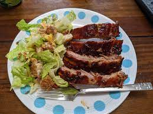

Demytra's Favourite

Description
This is probably my favourite too! They both chose the beef stew so I made her repick
This would be them fall-off-the-bone type ribs that remind you magic and love is real!
That "you're not yourself when you're hungry" type *insert happy dance* dish.
Ingredients
- Rack of ribs
- Spices
- Beef Stock
- Romaine Lettuce
- Ceasar Dressing
- Bacon
- Crispy Croutons
- Real Parmesan Cheese
Steps
- Put beef stock, siracha sauce and ribs into a pot and leave on medium-high heat for a bit
- Put bacon on to crisp it
- Wash the romaine lettuce and start to cut up into a big bowl
- Add ceasar dressing and completely cover lettuce
- Add crispy croutons
- Shred some parmesan cheese on top
- Add some more spices/seasoning to the ribs and put them in the oven on high-broil for 5-10 mins to crisp edges
- Break the cripsy bacon over the salad and mix in a little bit more sauce
- Remove the ribs from the oven and put it on the plate next to the salad
- Pairs well with anything! Ribs are life. Buuut tastes like heaven mixed with a tart red wine